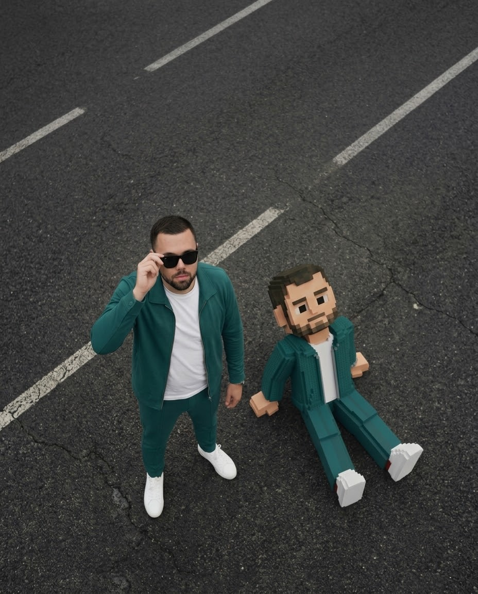
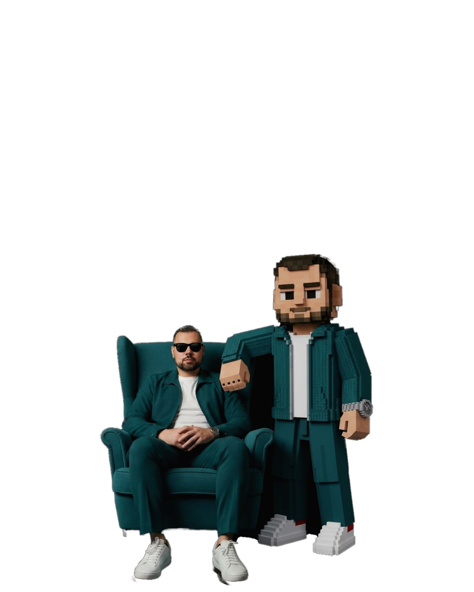
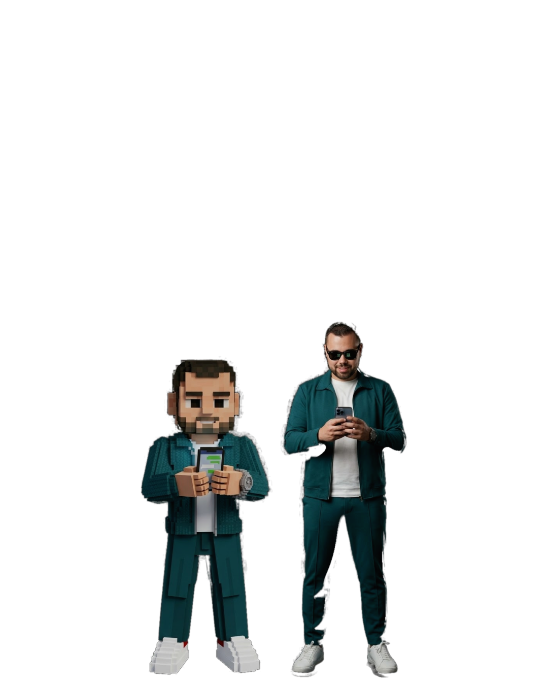
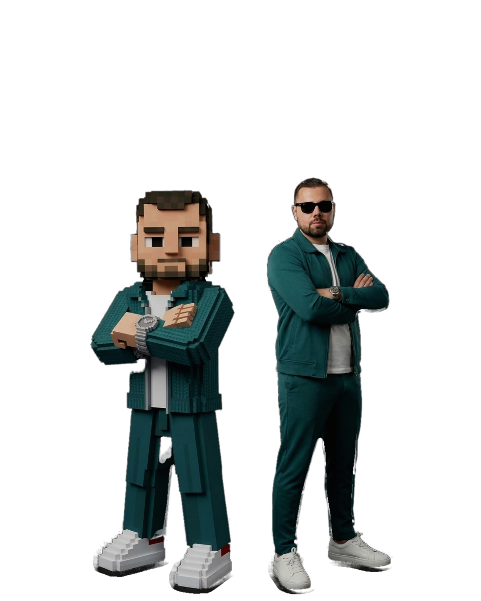
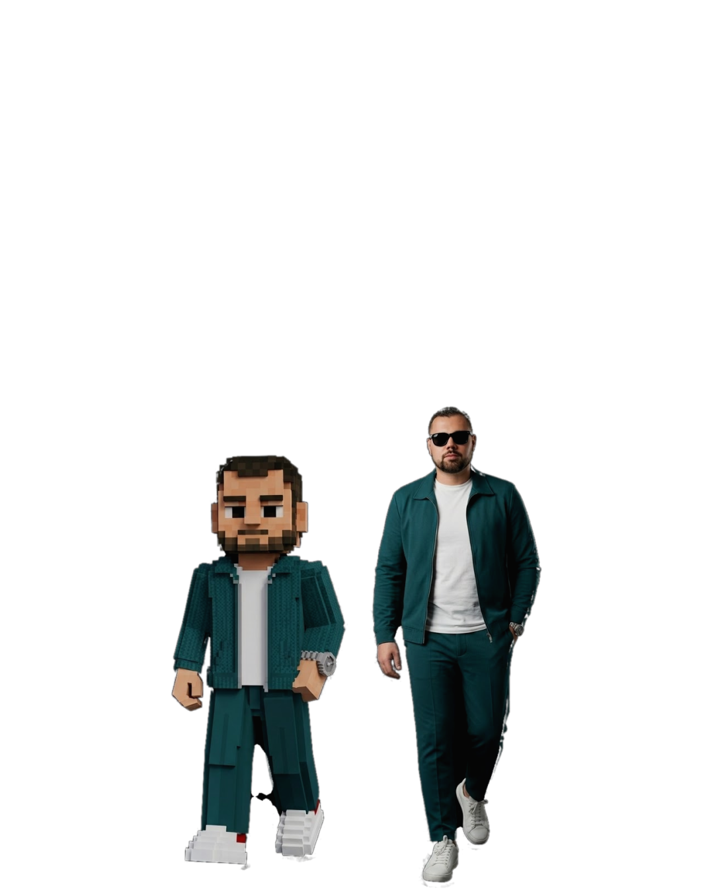
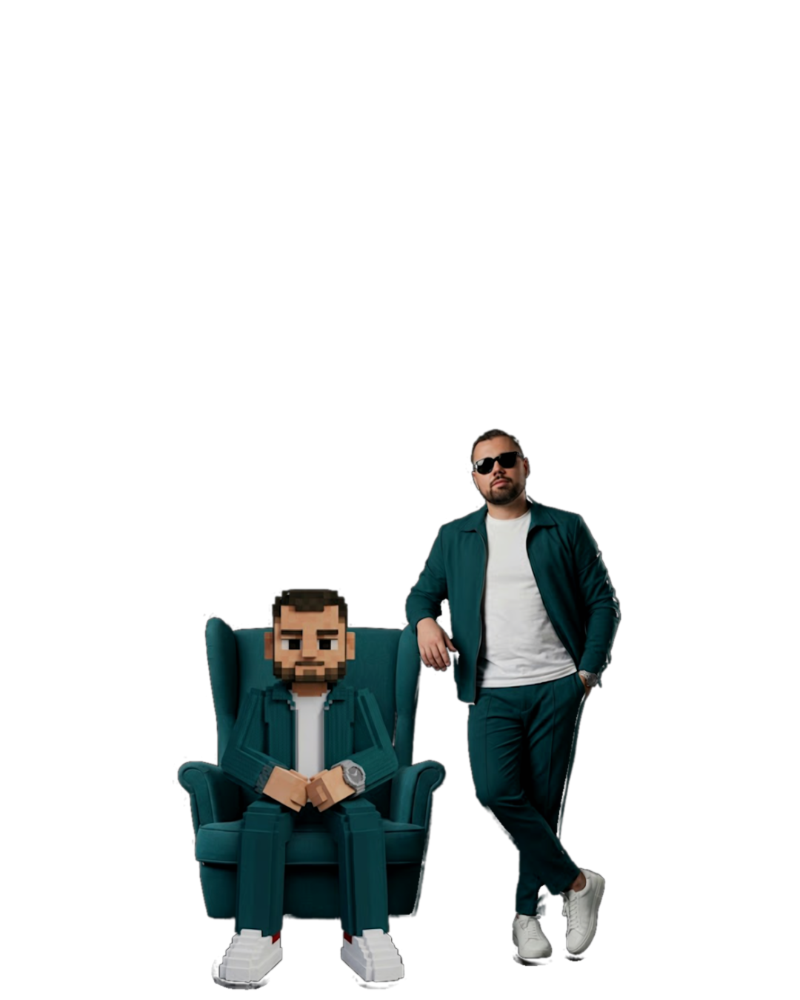
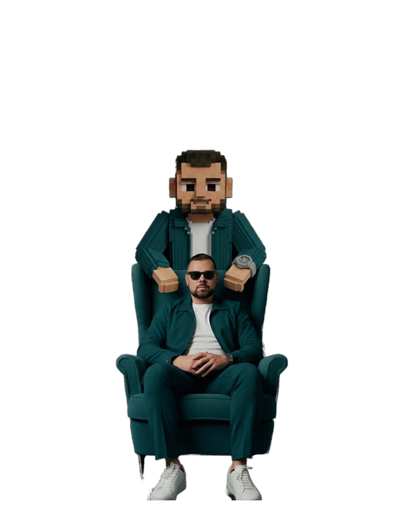

1/7
Find skills
Instala una sola skill.
Que sea esta.
La más instalada de skills.sh: más de 3 millones de instalaciones.

2/7
Find skills
Claude no sabe
qué skills existen.
Qué es una skillInstrucciones que le enseñan una tarea nueva a Claude.
Qué hace find-skillsBusca la que necesitas y te ayuda a instalarla.
Por qué la necesitasSin ella, buscarías skills una por una.

3/7
Find skills
Dile qué necesitas,
sin saber el nombre.
Pídeselo con tus palabras
¿Cómo respondo más rápido en WhatsApp?Busca una skill para mis carruseles.¿Hay una skill que revise mi ortografía?
Antes de instalarlaRevisa sus auditorías de seguridad en skills.sh.

4/7
Find skills
Una skill para
encontrarlas todas.
Tú le dices qué necesitas. Ella busca por ti.

5/7
Find skills
Instálala con
un solo comando.
npx skills add vercel-labs/skills --skill find-skills -a claude-code -g -y
Pégalo en tu terminal.
3 formas de buscar
En ClaudePídeselo como hablas.
En la terminalnpx skills find [palabra]
En la webskills.sh: las más usadas y las nuevas.

6/7
Find skills
Hazla tuya,
con tus reglas.
1 · Encuentra la skillfind-skills te muestra la más parecida a lo que haces.
2 · Pídele a Claude que la adapteCuéntale cómo es tu negocio.
3 · Guárdala con otro nombreAsí no pierdes tus cambios al actualizarla.

7/7
Find skills
Escribe SKILLS
y te envío la guía.
Con el paso a paso para instalarla y adaptarla a tu negocio.